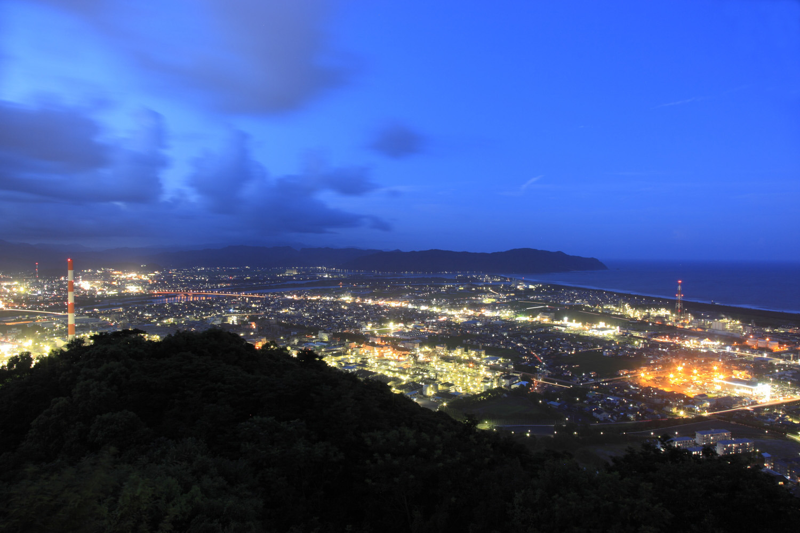
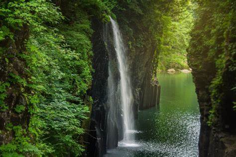

おすすめのスポット
- 愛宕山
- 高千穂峡
愛宕山

- 愛宕山
- 標高251mで、頂上までの道も整備され、自家用車でも徒歩でも手軽に登れる。展望台からは市内や日向灘、時には四国まで望むことができる。桜の開花時には多くの人で賑わう。
- ここからの夜景は「日本夜景遺産」や「夜景100選」、「日本百名月」に選定されている。また、登山道や遊歩道は「美しい日本の歩きたくなるみち500選」にも選ばれている。
高千穂峡

- 高千穂峡
- 国の名勝・天然記念物、日本の滝100選にも選ばれている。上から見下ろす滝も、貸しボートに乗って下から見上げる大迫力の滝もどちらも絶景。
トップに戻る